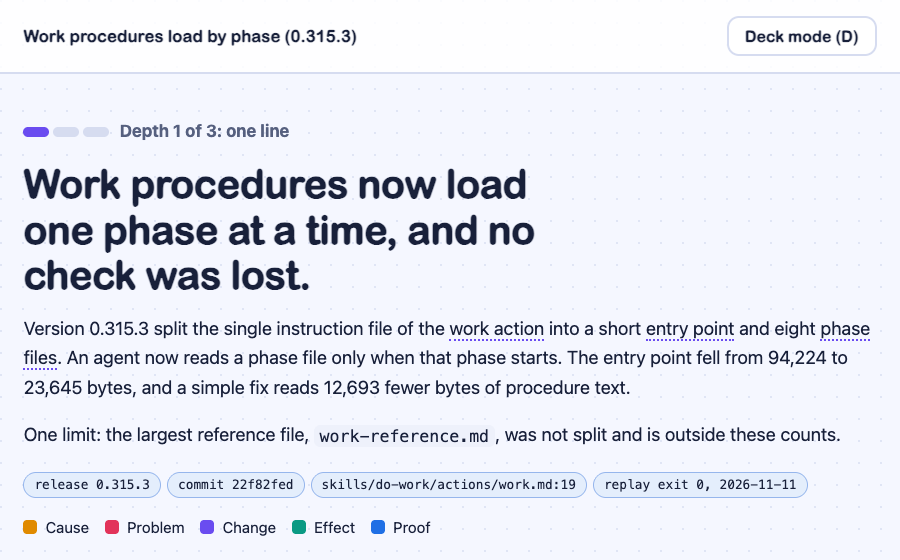
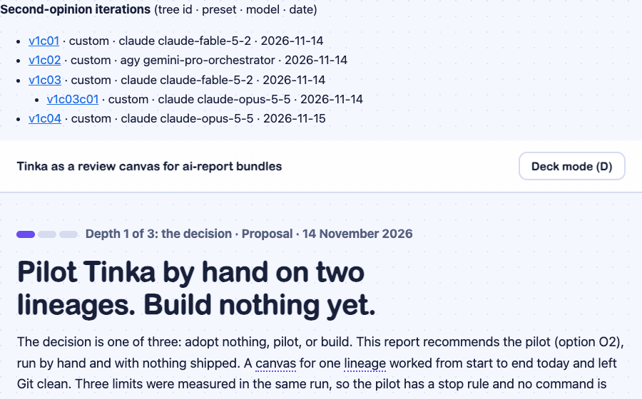
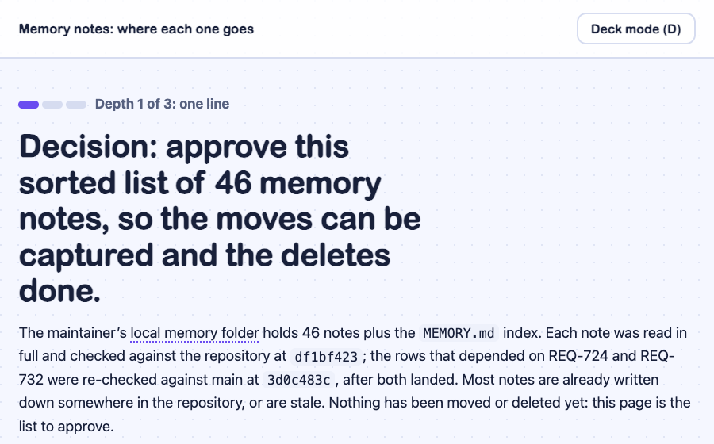

Completed work
Work procedures loaded by phase
Open a report from its preview. Click a name to copy it.

Completed work
Work procedures loaded by phase

Completed work
Guarded report rebuilds across models

Completed work
Board client modules and deployment evidence

Proposal
Tinka as a review canvas for report bundles

Proposal
Where each memory note should go

Proposal
A control repository for parallel checkouts

Root cause
Why labels collide above the duration ceiling

Root cause
Why the queue refills as fast as it drains

Architecture
Four skill packages and a request’s lifecycle

Architecture
A guide to the Go CLI and its commands
do-work-toolbox ai-report --kind root-cause <topic | REQ-NNN | UR-NNN>
Paste this line into your agent, replacing the placeholders with the source and what you liked.
do-work-toolbox ai-report gallery add <image path | link | html path> [what the user liked]